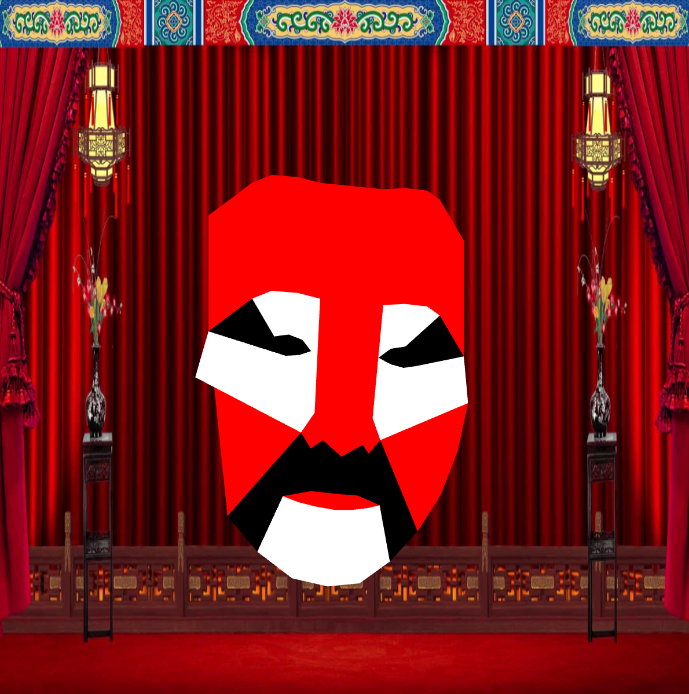
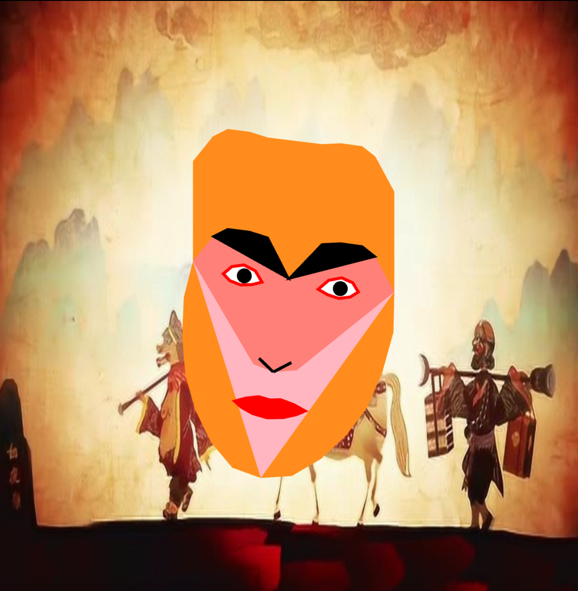
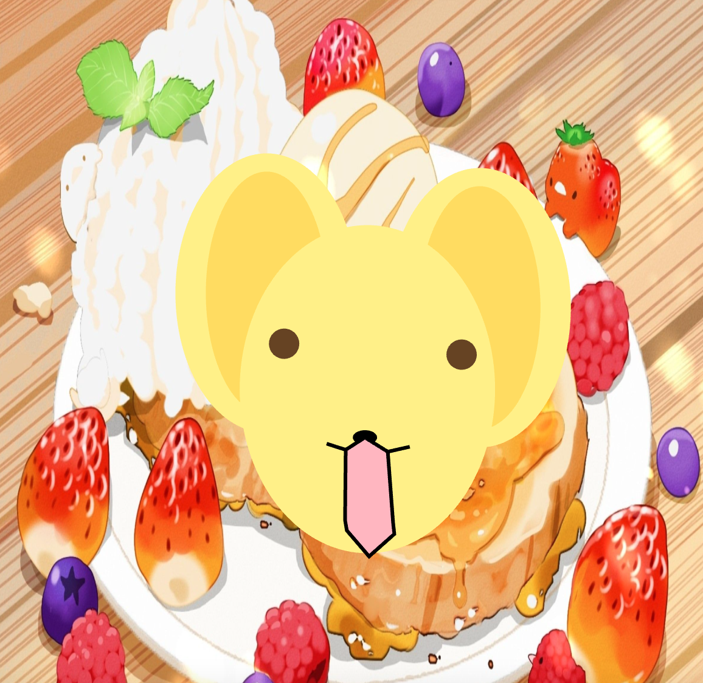

Face-Changing Filter
A filter inspired by Sichuan opera’s bian lian masks and favorite childhood characters, creating an immersive, interactive experience.
Creative Technology / Face Tracking

Overview
A filter inspired by Sichuan opera’s bian lian masks and favorite childhood characters, creating an immersive, interactive experience.
Concept
This filter is inspired by the 'face-changing' art of Sichuan opera (变脸, bian lian). The first mask is based on a traditional mask seen during bian lian performances, honoring this art. The other two masks are inspired by favorite childhood characters: the Monkey King and Kero (from Cardcaptor Sakura). Background scenes corresponding to each mask make the experience more immersive for the audience.
How it works
I built this interactive filter using face-tracking techniques in JavaScript. Each mask appears dynamically as the user moves their head, with background layers enhancing the immersive effect. The project combines traditional cultural elements with personal nostalgic characters to create a playful yet respectful interactive experience.
Final masks

